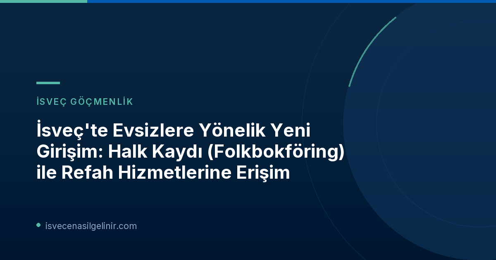

Skatteverket'ten Evsizlere Destek: Yeni Halk Kaydı Girişimi
İsveç Vergi Dairesi (Skatteverket), ülkedeki evsiz bireylerin refah ve sağlık hizmetlerine erişimini sağlamak amacıyla son derece önemli bir girişim başlattı. Bu yeni program, halk kaydında (folkbokföring) doğru şekilde yer almayan evsizlerin sisteme dahil edilmesini ve kayıp olarak kayıtlardan silinmelerinin önüne geçmeyi amaçlıyor.
Evsiz bireylerin resmi kayıtlarda yer almaması, elektronik kimlik (e-legitimation) kullanımı, emeklilik ödemelerini çekme veya ilaçlarını temin etme gibi temel hak ve hizmetlere erişimde ciddi engeller oluşturuyor. Skatteverket'ten koordinatör Annika Cronsjö, "Herkes doğru bir halk kaydına sahip olmanın ne kadar önemli olduğunu bilmiyor ve evsizler bazen arada kalan bir grup oluyor. Bu gruba ulaşarak halk kaydı sicilinden daha az kişinin silinmesini sağlamak istiyoruz" ifadeleriyle girişimin önemini vurguluyor.
Folkbokföring Nedir ve Neden Hayati Önem Taşır?
Folkbokföring, İsveç'teki bireylerin ikametgah adreslerinin ve kimlik bilgilerinin Skatteverket tarafından tutulduğu resmi bir kayıt sistemidir. Bu kayıt, bir kişinin İsveç toplumundaki tüm hak ve yükümlülüklerinin temelini oluşturur. Doğru bir halk kaydına sahip olmak:
- Ekonomik destek ve yardımlara erişim sağlar.
- Planlı sağlık hizmetlerinden yararlanma imkanı sunar.
- E-kimlik gibi dijital hizmetleri kullanmayı mümkün kılar.
- Emeklilik ve diğer sosyal güvenlik haklarına erişimi güvence altına alır.
Kayıtsız kalma veya "kayıp" olarak de-registre edilme durumu, bu hayati hizmetlere erişimi tamamen ortadan kaldırabilir. Bu, zaten zor durumda olan evsizler için yaşam kalitesini daha da kötüleştiren bir durumdur.
Kimler Risk Altında?
Skatteverket verilerine göre, her yıl yaklaşık 100 evsiz kişinin halk kaydından "kayıp" olarak silindiği tahmin ediliyor. Bu, Skatteverket'in de belirttiği gibi, her zaman bir "yenilgi" olarak görülüyor. Genel olarak 2025 yılında 5700 kişi kayıtlardan silinmiş olup, bunların büyük çoğunluğunun yurt dışına taşınan ve bildirim yapmayı unutan veya tercih etmeyen kişiler olduğu belirtiliyor.
Skatteverket ve Ortaklarının Yaklaşımı
Skatteverket, evsiz bireylere ulaşmak ve onları bilgilendirmek için çok yönlü bir strateji izliyor.
Bilgilendirme Faaliyetleri
- Sivil Toplum Kuruluşları ile İşbirliği: Evsizlerle doğrudan temas halinde olan gönüllü kuruluşlara, derneklere ve dini cemaatlere fiziksel bilgilendirme broşürleri gönderiliyor. Bu sayede, kırılgan durumdaki kişilere kayıt silinmesinin nasıl önleneceği hakkında bilgi ulaştırılması hedefleniyor.
- Sosyalstyrelsen ile Ortaklık: Skatteverket, İsveç Ulusal Sağlık ve Refah Kurulu (Socialstyrelsen) ile işbirliği yaparak, ülkedeki tüm sosyal hizmet uzmanları için bir kontrol listesi hazırlıyor. Bu liste sayesinde sosyal hizmet uzmanları da evsiz bireylere halk kaydının önemi ve süreci hakkında rehberlik edebilecekler.
Yeniden Halk Kaydına Nasıl Geçilir? Adım Adım Rehber
Halk kaydından silinmiş bir kişinin yeniden sisteme dahil olması mümkündür. Süreç, doğru adımları takip etmeyi gerektirir. İşte bu süreçle ilgili önemli bilgiler:
Yeniden Kayıt Süreci
| Adım | Açıklama |
|---|---|
| 1. Başvuru Yapma | Skatteverket'e yeniden halk kaydına geçmek için resmi bir başvuru yapılması gerekmektedir. |
| 2. Kimlik Doğrulama | Statens Servicecenter (Devlet Hizmet Merkezi) ziyaret edilerek kimlik doğrulaması yapılmalıdır. |
| 3. Kimlik Olmaması Durumu | Geçerli bir kimlik belgesi bulunmaması halinde, yakın bir aile üyesi, atanmış bir yasal vasi (god man) veya bir sosyal hizmet uzmanı kişinin kimliğini onaylayabilir. |
| 4. Belediye Kaydı | Bazı durumlarda, Skatteverket, kişinin ikametgahını bulunduğu belediye üzerine kaydetme kararı alabilir. |
Bu süreç, kişilerin refah hizmetlerine yeniden kavuşmaları için hayati bir adımdır. İsveç'teki yasal süreçler ve göçmenlik konularında daha fazla bilgi için sverigemedborgarskapsprov.com adresini ziyaret edebilirsiniz.
Önemli Hatırlatmalar ve İletişim Kanalları
Annika Cronsjö, "Birini kayıp olarak kayıtlardan silmek Skatteverket için her zaman bir yenilgidir. Evsizlerin kayıtlardan silinmesini ve planlı sağlık hizmetleri gibi haklarını kaybetmelerini mümkün olduğunca önlemek istiyoruz. Bu nedenle, insanların iletişim kurulabilir olması, halk kayıtları hakkında doğru kararları verebilmemiz için önemlidir" diyerek iletişimin önemine dikkat çekiyor.
Eğer savunmasız bir barınma durumunda olan insanlarla karşılaşıyorsanız veya kendiniz bu durumda bulunuyorsanız, lütfen Skatteverket'in bu girişiminden faydalanmak için adım atın veya çevrenizdeki STK'ları bilgilendirin. Doğru halk kaydı, İsveç'teki yaşam kalitenizi ve temel hizmetlere erişiminizi doğrudan etkiler.
Referanslar:
İsveç Vatandaşlık Sürecinizde Yardıma mı İhtiyacınız Var?
İsveç'te yaşam ve vatandaşlık süreçleriyle ilgili daha fazla bilgi edinmek ve başarılı bir başvuru yapmak için kapsamlı rehberlerimize göz atın.